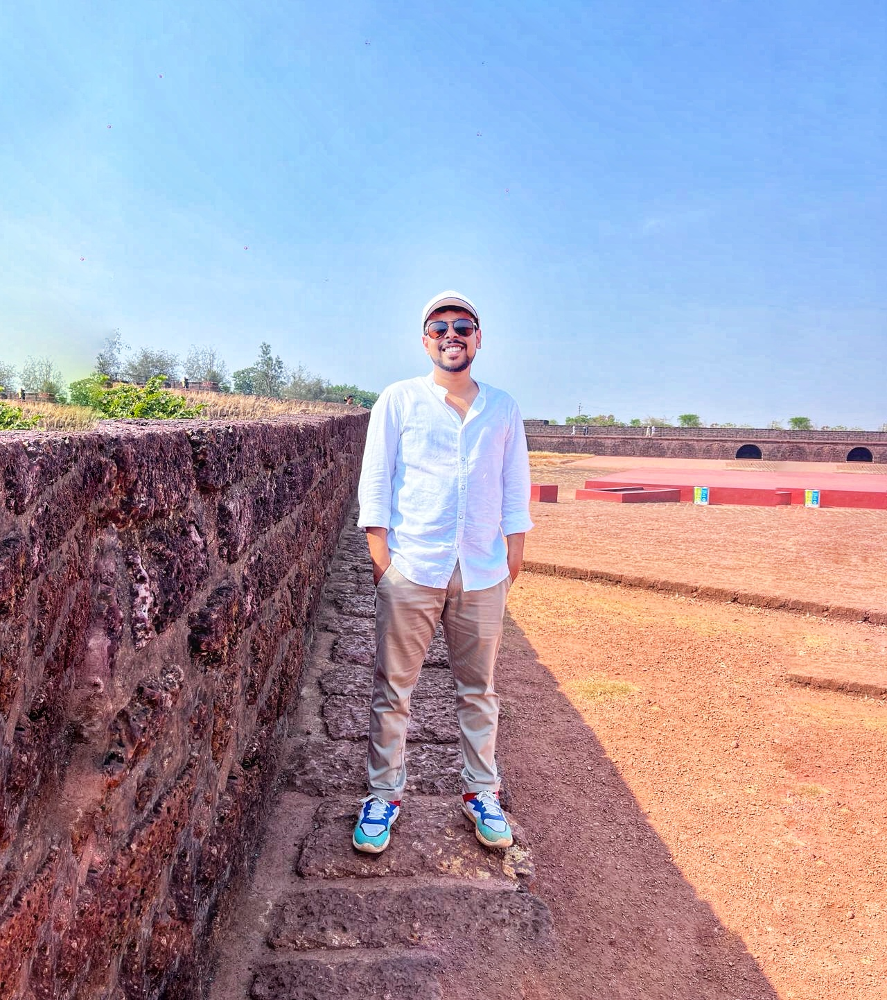

|
Puru Ojha I'm a Master's student at the International Institute of Information Technology, Hyderabad. My research bridges the gap between semantic reasoning and physical reality in robotics. I focus on developing hierarchical systems that enable Vision-Language Models to generate probabilistic spatial plans while ensuring they remain grounded in the kinematic and dynamic constraints of real robot embodiments. My work addresses the fundamental challenge of long-horizon manipulation: how to combine the semantic common sense of foundation models with the geometric rigor required for reliable physical interaction. |
 |
{kind=link}
ResearchModern robotics is fractured between two paradigms: end-to-end Vision-Language-Action models that possess semantic understanding but often hallucinate physics, and classical planning systems that are geometrically rigorous but rely on brittle, hand-engineered abstractions. My research aims to bridge this divide through Hierarchical Action Reasoning Models (HARMs)—a framework where high-level semantic reasoning is grounded via Probabilistic Spatial Contracts and verified through Embodiment-Aware Causal Verification. Rather than treating VLMs as isolated commanders that output deterministic actions, I develop systems where spatial intent is represented as a distribution of feasible interactions, enabling robots to sample trajectories that are both semantically logical and physically executable. This approach combines the generalization of foundation models with the reliability required for real-world deployment. |
Publications |

|
ACMGVR: Architecturally Consistent Mazes for Games in Virtual
Reality
Puru Ojha, Y. Raghu Reddy CHI PLAY, 2024 Paper | Code | Video | Poster Engineered a framework for procedural generation of complex, structured environments for benchmarking RL agents and studying sim-to-real transfer of navigational policies. |
|
|
The POMS Effect: Measuring the Impact of Overlapping Architectures on User
Engagement in Virtual Reality
Puru Ojha, Aaditya Narain, Y. Raghu Reddy ICVR, 2025 Paper | Code | Video | Poster
|
Research Projects |
|
|
Zero-Shot Policy Transfer for Cross-Embodiment Robotic Manipulation
Paper | Code | Video | Poster Developed a zero-shot policy transfer framework for cross-embodiment manipulation, enabling a generalist policy (π₀) trained on Franka Panda data to control a morphologically distinct uFactory xArm without any fine-tuning. Implemented a Brownian bridge diffusion model for visual domain adaptation, translating sensory inputs from the target robot (xArm) to the source domain (Panda) for seamless, real-time policy execution. Engineered a robust policy transfer pipeline that leverages real-world data, addressing generalization challenges across different robot hardware and environments. |
|
|
Sequential Rearrangement Planning with Language-Guided Graph
Transformer
Paper | Code | Video | Poster Designed a graph-based transformer model for predicting object removal sequences in cluttered tabletop scenes, conditioned on natural language goals. Built a large-scale simulation and training pipeline with expert A* supervision and PPO fine-tuning, achieving state-of-the-art performance over GRN and NRP baselines. |
|
|
Enhanced Transformer-Based Framework for Grounded Image Situation
Recognition
Paper | Code | Video | Poster Developed a transformer framework for grounded situation recognition to enable robots to follow complex natural language instructions. Improved noun grounding and verb prediction by integrating CLIP and Faster-RCNN features into a CoFormer architecture, achieving state-of-the-art performance on the SWiG dataset. |
|
|
Procedural Generation of Architecturally Consistent Simulation
Environment
Paper | Code | Video | Poster Engineered a framework for procedural generation of complex, structured environments for benchmarking RL agents and studying sim-to-real transfer of navigational policies. Designed a graph-based algorithm to generate scalable, architecturally consistent layouts with dynamic multi-path structures for realistic simulation. |
Miscellanea |
Leadership & Mentorship |
AI Olympiad Coach, IIIT-H: Coached India’s IOAI 2025 team; taught RL and motion planning
bridging classical robotics with modern deep RL (DQN, PPO).
Teaching Assistant, Mobile Robotics, IIIT-H: Supported instruction and projects on robot kinematics, SLAM, and path planning using ROS and Gazebo. |
Technical Skills |
Languages & Tools: Python, C++, C#, Bash, Git, Linux, Tmux
Robotics & Simulation: ROS, PyBullet, Gazebo, MoveIt, RViz, OpenCV, PCL, Unity, Blender Deep Learning & RL: PyTorch, Stable Baselines3, TensorFlow, CLIP, PointNet++, PyTorch Geometric, RLlib, HDF5 |
|
Design and source code from Jon Barron's website. |